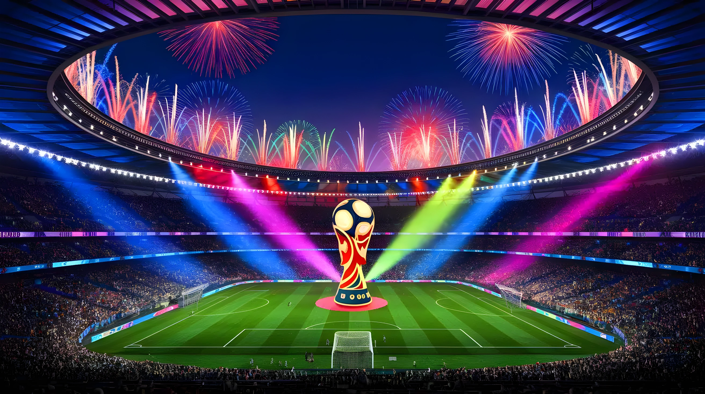

À quelques semaines du coup d'envoi du Mondial nord-américain (11 juin – 19 juillet 2026), une polémique mondiale enfle autour des tarifs pratiqués par la FIFA. Pour la première fois dans l'histoire de la compétition, l'instance dirigeante du football mondial a adopté la tarification dynamique, propulsant le prix des billets vers des sommets inédits. Des parlementaires américains, des associations de supporters européens et des personnalités du football dénoncent unanimement un tournoi désormais hors de portée des fans ordinaires — au profit d'une machine financière qui vise 13 milliards de dollars de recettes.
La Coupe du Monde 2026 marque un tournant dans la relation entre la FIFA et ses supporters. Pour la première fois, l'organisation a adopté la tarification dynamique (dynamic pricing), un mécanisme courant dans le secteur du spectacle américain — concerts, matchs de NFL — mais totalement inédit à l'échelle d'un Mondial. Concrètement, les prix s'ajustent en temps réel en fonction de la demande, rendant toute planification budgétaire hasardeuse pour les fans souhaitant assister à plusieurs rencontres.
Les chiffres donnent le vertige. Lors de la phase de vente de décembre 2025, le match d'ouverture des États-Unis face au Paraguay à Los Angeles était proposé à 1 120, 1 940 ou 2 735 dollars selon la catégorie. À l'approche du tournoi, le billet le plus cher pour ce même match a grimpé à 4 105 dollars. À titre de comparaison, au Qatar en 2022, les billets les moins chers pour la phase de groupes étaient proposés à environ 70 dollars ; à l'édition américaine, les places les plus accessibles démarrent à 380 dollars — pour des rencontres impliquant des nations peu médiatiques.
L'ampleur des dérives sur le marché de la revente est sans précédent. En avril 2026, quatre places pour la finale au MetLife Stadium ont été listées à près de 2,3 millions de dollars chacune sur la plateforme de revente officielle de la FIFA. L'organisation ne fixe pas directement ces prix de revente, mais prélève une commission de 30 % sur chaque transaction — 15 % à la charge du vendeur, 15 % à la charge de l'acheteur. Un mécanisme que Peter Moore, ex-directeur général de Liverpool FC, a qualifié de scandaleux : les billets ne sont plus des droits d'accès pour les supporters, mais des actifs spéculatifs pour des intermédiaires.
« La tarification dynamique n'a pas sa place à la Coupe du Monde. Les billets ne sont plus pour les fans, ce sont des actifs échangeables. C'est dystopique, et c'est une menace existentielle pour le football. »
— Peter Moore, ex-directeur général de Liverpool FC, avril 2026Pour les supporters étrangers, la facture totale explose bien au-delà du seul billet d'entrée. Les hôtels ont connu des hausses spectaculaires dans les villes hôtes : +173 % à Mexico, +333 % à Guadalajara selon plusieurs estimations rapportées par la presse. Aux États-Unis, le transport vers les stades est devenu une taxe déguisée : l'aller-retour Manhattan – MetLife Stadium coûte désormais environ 128 dollars, contre 11 dollars en temps normal. Le stationnement atteint 225 dollars au MetLife Stadium et jusqu'à 300 dollars à Los Angeles.
Les fan zones, traditionnellement gratuites lors des précédents Mondiaux, ne le sont plus dans plusieurs villes hôtes américaines : l'entrée y est facturée environ 12,50 dollars. Enfin, les supporters africains font face à un obstacle supplémentaire : certains ressortissants d'Algérie, du Sénégal, de Côte d'Ivoire, du Cap-Vert ou de Tunisie doivent déposer une caution de visa comprise entre 4 270 et 12 800 euros pour entrer sur le sol américain — une condition jugée discriminatoire par de nombreuses organisations de supporters.
Face à l'ampleur des critiques, 69 membres du Congrès américain ont adressé en mars 2026 une lettre officielle à Gianni Infantino, président de la FIFA, orchestrée par la représentante Sydney Kamlager-Dove. La missive accuse directement l'organisation de price gouging (pratiques tarifaires abusives) et dénonce une compétition devenue « un projet d'exclusion aux dépens des fans qui font de la Coupe du Monde l'événement le plus regardé au monde ». En Europe, l'association Football Supporters Europe (FSE) a déposé une plainte formelle auprès de la Commission européenne pour dénoncer les tarifs jugés « exorbitants ».
Sous la pression, la FIFA a consenti à quelques concessions limitées : introduction d'un quota de billets à 60 dollars (réservés aux associations de supporters officielles, en nombre très réduit), et renonciation aux frais administratifs en cas de remboursement après la finale. Des mesures jugées insuffisantes par les associations de fans, qui y voient avant tout des « tactiques d'apaisement » face à un rejet mondial.
Première phase de vente de billets. Les tarifs pour les matches des États-Unis choquent la communauté mondiale des supporters. L'ouverture USA–Paraguay est proposée à 2 735 dollars en catégorie 1.
Infantino annonce une demande record et défend la tarification dynamique en soulignant que la Coupe du Monde est l'unique source de revenus de la FIFA sur un cycle de quatre ans.
69 membres du Congrès américain écrivent à Infantino pour exiger une révision des prix. La FIFA concède un quota limité de billets à 60 dollars sous pression.
Quatre billets pour la finale au MetLife Stadium sont listés à 2,3 millions de dollars chacun sur la plateforme officielle de revente. La FIFA annonce une nouvelle phase de vente dite « de dernière minute » pour les 104 matches.
Coup d'envoi du tournoi à Mexico City. 48 équipes, 104 matches, 16 villes hôtes entre les États-Unis, le Canada et le Mexique.
Infantino a défendu les prix au nom de la mission première de la FIFA : générer en un mois le budget nécessaire pour financer le développement du football dans 211 pays membres durant les 47 mois suivants. Sur le cycle 2023–2026, la FIFA prévoit des recettes totales de 13,1 milliards de dollars — dont 3 milliards issus de la seule billetterie et de l'hospitalité. La comparaison avec le Super Bowl de la NFL, avancée par le commissaire de la MLS Don Garber, a été vivement contestée : l'attrait du Super Bowl repose précisément sur son caractère exceptionnel (une édition par an), à rebours d'un Mondial qui dispute plus d'une centaine de rencontres.
La controverse autour des prix de la Coupe du Monde 2026 révèle une tension fondamentale au cœur du football mondial : celle entre l'héritage populaire de ce sport, né dans les quartiers ouvriers d'Europe et d'Amérique latine, et sa transformation progressive en bien de consommation premium. En adoptant la logique de la tarification dynamique propre au marché américain du spectacle, la FIFA a choisi délibérément de maximiser ses revenus au détriment de l'accessibilité. Ce faisant, elle risque de vider les stades des supporters authentiques au profit d'une clientèle corporate et spéculatrice — creusant un peu plus le fossé entre les instances dirigeantes du football et la base populaire qui en constitue la légitimité historique.
With just weeks to go before the North American World Cup kicks off (June 11 – July 19, 2026), a global controversy has erupted over FIFA's ticket pricing. For the first time in the tournament's history, the world governing body has adopted dynamic pricing, sending ticket costs to unprecedented levels. US lawmakers, European fan groups and prominent figures in the sport have united in condemning a World Cup that has been priced out of reach for ordinary supporters — all in service of a financial machine targeting $13 billion in revenue.
The 2026 World Cup marks a turning point in the relationship between FIFA and its supporters. For the first time, the organisation has adopted dynamic pricing — a mechanism commonplace in the American entertainment industry (concerts, NFL games) but entirely unprecedented at a World Cup. In practice, prices adjust in real time based on demand, making any budget planning a risky exercise for fans wishing to attend multiple fixtures.
The figures are staggering. During the December 2025 sales phase, tickets for the USA's opening match against Paraguay in Los Angeles were priced at $1,120, $1,940 and $2,735 depending on the category. As the tournament approached, the most expensive seat for that same match climbed to $4,105. For comparison, in Qatar in 2022, the cheapest group-stage tickets started at roughly $70; in this edition, the most affordable seats start at $380 — for matches involving lower-profile nations.
The scale of excess on the resale market is unprecedented. In April 2026, four seats for the final at MetLife Stadium were listed at nearly $2.3 million each on FIFA's own official resale platform. FIFA does not set these resale prices, but collects a 30% commission on every transaction — 15% charged to the seller and 15% to the buyer. A mechanism that Peter Moore, former Liverpool FC chief executive, called outrageous: tickets are no longer access rights for supporters, but speculative assets for intermediaries.
"Dynamic pricing doesn't belong in the World Cup. Tickets are no longer for fans — they're tradable assets. It's dystopian, and it's an existential threat to the game."
— Peter Moore, former Liverpool FC CEO, April 2026For foreign supporters, the total bill explodes well beyond the face value of a ticket. Hotels have seen spectacular price increases in host cities: reports suggest rises of 173% in Mexico City and 333% in Guadalajara. In the United States, transport to stadiums has become a hidden surcharge: the round trip from Manhattan to MetLife Stadium now costs around $128, compared to $11 under normal circumstances. Stadium parking reaches $225 at MetLife and up to $300 in Los Angeles.
Fan zones — traditionally free at previous World Cups — are no longer free in several American host cities, with entry charged at around $12.50. Finally, African supporters face an additional barrier: nationals of Algeria, Senegal, Ivory Coast, Cape Verde and Tunisia are required to deposit a visa bond of between €4,270 and €12,800 to enter the United States — a condition widely condemned as discriminatory by fans' organisations.
In response to the wave of criticism, 69 members of the US Congress sent an official letter to FIFA president Gianni Infantino in March 2026, coordinated by Representative Sydney Kamlager-Dove. The letter directly accuses FIFA of price gouging and denounces a competition that has become "an exclusionary enterprise at the expense of the fans who make the World Cup the most-watched sporting event in the world." In Europe, the Football Supporters Europe (FSE) federation filed a formal complaint with the European Commission over what it described as "exorbitant" pricing.
Under pressure, FIFA agreed to a handful of limited concessions: a small quota of $60 tickets reserved for accredited supporters' associations, and a waiver of administrative fees on refunds issued after the final. These measures were dismissed as inadequate by fan groups, who largely viewed them as mere "appeasement tactics" in the face of global pushback.
First ticket sales phase. Prices for US matches shock the global supporters' community. The USA–Paraguay opener is listed at $2,735 for Category 1.
Infantino announces record demand and defends dynamic pricing, arguing the World Cup is FIFA's sole revenue source over a four-year cycle.
69 US Members of Congress write to Infantino demanding a price revision. FIFA concedes a limited quota of $60 tickets under pressure.
Four final tickets at MetLife Stadium listed at $2.3 million each on the official resale platform. FIFA announces a new "last-minute sales" phase for all 104 matches.
Tournament kicks off in Mexico City. 48 teams, 104 matches, 16 host cities across the United States, Canada and Mexico.
Infantino has defended the pricing in the name of FIFA's primary mission: generating in one month the funds needed to support football development across 211 member associations over the following 47 months. Over the 2023–2026 cycle, FIFA projects total revenues of $13.1 billion — of which $3 billion comes from ticketing and hospitality alone. The comparison with the NFL's Super Bowl, advanced by MLS commissioner Don Garber, has been vigorously challenged: the Super Bowl's appeal rests precisely on its exceptional, once-a-year nature — the opposite of a World Cup featuring over a hundred matches.
The 2026 World Cup pricing controversy lays bare a fundamental tension at the heart of global football: the conflict between the sport's popular heritage — born in the working-class neighbourhoods of Europe and Latin America — and its gradual transformation into a premium consumer product. By embracing the dynamic pricing logic of the American entertainment market, FIFA has made a deliberate choice to maximise revenue at the expense of accessibility. In doing so, it risks emptying its stadiums of authentic supporters in favour of corporate clients and speculators — widening the rift between football's governing bodies and the popular base that underpins their historical legitimacy.